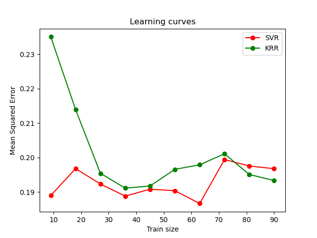

Nota
Haz clic aquí para descargar el código completo del ejemplo o para ejecutar este ejemplo en tu navegador a través de Binder
Comparación de la regresión de cresta de núcleo y la SVR¶
Tanto la regresión de cresta núcleo (KRR) como la SVR aprenden una función no lineal empleando el truco del núcleo, es decir, aprenden una función lineal en el espacio inducido por el núcleo respectivo que corresponde a una función no lineal en el espacio original. Se diferencian en las funciones de pérdida (pérdida de cresta frente a pérdida insensible a épsilon). A diferencia del SVR, el ajuste de un KRR puede realizarse de forma cerrada y suele ser más rápido para conjuntos de datos de tamaño mediano. Por otro lado, el modelo aprendido no es disperso y, por tanto, es más lento que el SVR en el momento de la predicción.
Este ejemplo ilustra ambos métodos en un conjunto de datos artificial, que consiste en una función objetivo sinusoidal y un fuerte ruido añadido a cada cinco puntos de datos. La primera figura compara el modelo aprendido de KRR y SVR cuando tanto la complejidad/regularización como el ancho de banda del núcleo RBF se optimizan mediante la búsqueda en cuadrícula. Las funciones aprendidas son muy similares; sin embargo, el ajuste de KRR es aproximadamente siete veces más rápido que el ajuste de SVR (ambos con búsqueda en cuadrícula). Sin embargo, la predicción de 100000 valores objetivo es más de tres veces más rápida con SVR, ya que ha aprendido un modelo disperso utilizando sólo aproximadamente 1/3 de los 100 puntos de datos de entrenamiento como vectores de soporte.
La siguiente figura compara el tiempo de ajuste y predicción de KRR y SVR para diferentes tamaños del conjunto de entrenamiento. El ajuste de KRR es más rápido que el de SVR para conjuntos de entrenamiento de tamaño mediano (menos de 1000 muestras); sin embargo, para conjuntos de entrenamiento más grandes, el escalamiento en SVR es mejor. Con respecto al tiempo de predicción, SVR es más rápido que KRR para todos los tamaños del conjunto de entrenamiento debido a la solución dispersa aprendida. Ten en cuenta que el grado de dispersión y, por tanto, el tiempo de predicción depende de los parámetros epsilon y C del SVR.


- 
Out:
SVR complexity and bandwidth selected and model fitted in 1.016 s
KRR complexity and bandwidth selected and model fitted in 1.341 s
Support vector ratio: 0.320
SVR prediction for 100000 inputs in 0.338 s
KRR prediction for 100000 inputs in 0.306 s
# Authors: Jan Hendrik Metzen <jhm@informatik.uni-bremen.de>
# License: BSD 3 clause
import time
import numpy as np
from sklearn.svm import SVR
from sklearn.model_selection import GridSearchCV
from sklearn.model_selection import learning_curve
from sklearn.kernel_ridge import KernelRidge
import matplotlib.pyplot as plt
rng = np.random.RandomState(0)
# #############################################################################
# Generate sample data
X = 5 * rng.rand(10000, 1)
y = np.sin(X).ravel()
# Add noise to targets
y[::5] += 3 * (0.5 - rng.rand(X.shape[0] // 5))
X_plot = np.linspace(0, 5, 100000)[:, None]
# #############################################################################
# Fit regression model
train_size = 100
svr = GridSearchCV(SVR(kernel='rbf', gamma=0.1),
param_grid={"C": [1e0, 1e1, 1e2, 1e3],
"gamma": np.logspace(-2, 2, 5)})
kr = GridSearchCV(KernelRidge(kernel='rbf', gamma=0.1),
param_grid={"alpha": [1e0, 0.1, 1e-2, 1e-3],
"gamma": np.logspace(-2, 2, 5)})
t0 = time.time()
svr.fit(X[:train_size], y[:train_size])
svr_fit = time.time() - t0
print("SVR complexity and bandwidth selected and model fitted in %.3f s"
% svr_fit)
t0 = time.time()
kr.fit(X[:train_size], y[:train_size])
kr_fit = time.time() - t0
print("KRR complexity and bandwidth selected and model fitted in %.3f s"
% kr_fit)
sv_ratio = svr.best_estimator_.support_.shape[0] / train_size
print("Support vector ratio: %.3f" % sv_ratio)
t0 = time.time()
y_svr = svr.predict(X_plot)
svr_predict = time.time() - t0
print("SVR prediction for %d inputs in %.3f s"
% (X_plot.shape[0], svr_predict))
t0 = time.time()
y_kr = kr.predict(X_plot)
kr_predict = time.time() - t0
print("KRR prediction for %d inputs in %.3f s"
% (X_plot.shape[0], kr_predict))
# #############################################################################
# Look at the results
sv_ind = svr.best_estimator_.support_
plt.scatter(X[sv_ind], y[sv_ind], c='r', s=50, label='SVR support vectors',
zorder=2, edgecolors=(0, 0, 0))
plt.scatter(X[:100], y[:100], c='k', label='data', zorder=1,
edgecolors=(0, 0, 0))
plt.plot(X_plot, y_svr, c='r',
label='SVR (fit: %.3fs, predict: %.3fs)' % (svr_fit, svr_predict))
plt.plot(X_plot, y_kr, c='g',
label='KRR (fit: %.3fs, predict: %.3fs)' % (kr_fit, kr_predict))
plt.xlabel('data')
plt.ylabel('target')
plt.title('SVR versus Kernel Ridge')
plt.legend()
# Visualize training and prediction time
plt.figure()
# Generate sample data
X = 5 * rng.rand(10000, 1)
y = np.sin(X).ravel()
y[::5] += 3 * (0.5 - rng.rand(X.shape[0] // 5))
sizes = np.logspace(1, 4, 7).astype(int)
for name, estimator in {"KRR": KernelRidge(kernel='rbf', alpha=0.1,
gamma=10),
"SVR": SVR(kernel='rbf', C=1e1, gamma=10)}.items():
train_time = []
test_time = []
for train_test_size in sizes:
t0 = time.time()
estimator.fit(X[:train_test_size], y[:train_test_size])
train_time.append(time.time() - t0)
t0 = time.time()
estimator.predict(X_plot[:1000])
test_time.append(time.time() - t0)
plt.plot(sizes, train_time, 'o-', color="r" if name == "SVR" else "g",
label="%s (train)" % name)
plt.plot(sizes, test_time, 'o--', color="r" if name == "SVR" else "g",
label="%s (test)" % name)
plt.xscale("log")
plt.yscale("log")
plt.xlabel("Train size")
plt.ylabel("Time (seconds)")
plt.title('Execution Time')
plt.legend(loc="best")
# Visualize learning curves
plt.figure()
svr = SVR(kernel='rbf', C=1e1, gamma=0.1)
kr = KernelRidge(kernel='rbf', alpha=0.1, gamma=0.1)
train_sizes, train_scores_svr, test_scores_svr = \
learning_curve(svr, X[:100], y[:100], train_sizes=np.linspace(0.1, 1, 10),
scoring="neg_mean_squared_error", cv=10)
train_sizes_abs, train_scores_kr, test_scores_kr = \
learning_curve(kr, X[:100], y[:100], train_sizes=np.linspace(0.1, 1, 10),
scoring="neg_mean_squared_error", cv=10)
plt.plot(train_sizes, -test_scores_svr.mean(1), 'o-', color="r",
label="SVR")
plt.plot(train_sizes, -test_scores_kr.mean(1), 'o-', color="g",
label="KRR")
plt.xlabel("Train size")
plt.ylabel("Mean Squared Error")
plt.title('Learning curves')
plt.legend(loc="best")
plt.show()
Tiempo total de ejecución del script: (0 minutos 48.599 segundos)